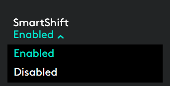
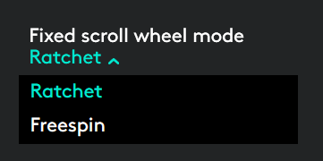

Scrollrad mit automatischer Geschwindigkeitsanpassung
Wenn SmartShift™ aktiviert ist, wechselt das Scrollrad mit automatischer Geschwindigkeitsanpassung gemäß Ihren Berührungen automatisch zwischen zwei Scrollmodi.
- Schrittweiser (Präzisions-)Modus – ideal für präzise Navigation durch Elemente und Listen.
- Hyperschneller Freilaufmodus – dank nahezu reibungsfreier Drehung können Sie große Dokumente und Webseiten rasch überfliegen.
Drehen, um in den
|
Bremsen und langsam drehen,
|


SmartShift aktivieren
Wählen Sie Aktiviert aus dem Dropdown-Menü SmartShift in der Registerkarte Zeigen und scrollen.

Sie können SmartShift ausschalten, indem Sie Deaktiviert aus dem Dopdown-Menü SmartShift wählen.
Wenn SmartShift deaktiviert ist, hat ein Drehen oder Bremsen des Tastenrads keinen Einfluss auf den aktuellen Scrollmodus.
Modi manuell wechseln
Unabhängig davon, ob SmartShift aktiviert ist oder nicht, können Sie manuell zwischen den Modi umschalten, indem Sie den Modusschalter drücken.
Standardmäßig, ist der Modusschalter der Taste auf der oberen Seite der Maus zugewiesen. (Die aktuellen Tastenzuweisungen können Sie auf der Registerkarte Maus überprüfen.)

Einen nicht veränderbaren Scrollradmodus einstellen
Wenn Sie nur einen Modus verwenden möchten, können Sie entweder den hyperschnellen (Freilauf-) oder schrittweisen (Präzisions-)modus als nicht veränderbaren Scrollradmodus einstellen.
Wählen Sie auf der Registerkarte Zeigen und scrollen entweder Präzision oder Freilauf aus dem Dropdown-Menü Nicht veränderbarer Scrollradmodus.

WICHTIG!
Sie können den Scrollradmodus nur als unveränderbar einstellen, wenn SmartShift deaktiviert ist und der Modusschalter keiner MX Master-Taste zugeordnet ist.
So aktivieren Sie den nicht veränderbaren Scrollradmodus
- Wählen Sie Deaktiviert aus dem Dropdown-Menü SmartShift.
- Klicken Sie auf der Registerkarte Maus auf den markierten Modusschalter und wählen Sie dafür eine andere Aktion als den Moduswechsel.
Weitere Informationen finden Sie in der MX Master-Anleitung.